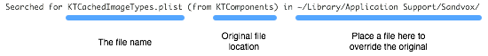

Overriding Sandvox Application Files
This article is aimed at advanced users of Sandvox only. As such, any modifications made to Sandvox files using the techniques described below cannot be supported by Karelia.
The Sandvox application is made up of a large number of files and folders, all contained inside the main "Sandvox.app" package. Sandvox allows you to effectively replace or override some of these files by placing your own modified copy in the "Library → Application Support → Sandvox" folder in your Home Directory.
To see the full list of files that you can override:
- Quit Sandvox and enter this command in the Terminal:
defaults write com.karelia.Sandvox ShowSearchPaths -bool YES
This tells Sandvox to output all file searches to the console. - Relaunch Sandvox.
- Open the console log using the Console application (found in Applications > Utilities).
- To make things easier to read, you may wish to filter the log to "Sandvox."
Towards the end of the log, there should be a number of lines of output like this:
2006-11-21 11:18:00.637 Sandvox[18762] Searched for KTCachedImageTypes.plist (from KTComponents) in ~/Library/Application Support/Sandvox/

To customize and override a Sandvox application file:
- Locate the Sandvox application in the Finder
- Control-click the application icon and choose "Show Package Contents."
- Using the Console output as a guide, browse to the correct folder in the Sandvox package:
- application - look in the "/Contents/Resources" directory
- KTComponents - look in the "/Contents/Frameworks/KTComponents.framework/Resources" directory
- plug-in - look in the "/Contents/Plugins/" directory, inside the appropriate plug-in
- Copy the file somewhere temporary like the desktop.
- Make your modifications.
- Place the file in the appropriate directory and relaunch Sandvox. (In the example above it was "~/Library/Application Support/Sandvox/")
Some of the Sandvox files that can be overridden:
- KTCachedImageTypes.plist
- A property list of the built-in image sizes. For instance, change the maxPixels value to something larger than 640 to allow for larger images on photo pages.
- KTPageTemplate.html
- The global HTML template that all pages are generated from. Example: change [[=&toplink.titleText]] instances to [[=toplink.titleHTML]] to force the site menu to show styles (font, color, boldface, etc.) in the page titles.
- RSSTemplate.xml
- The XML template for RSS feeds.
- HTML Templates
- Files with titles like "TextPageTemplate.html." The HTML template that defines how a plug-in will look. Makes use of our special HTML modifers.
- globalCSS.txt
- This and other CSS files are used in the generation of the CSS code for a site. This is merged with the CSS in the chosen site design.